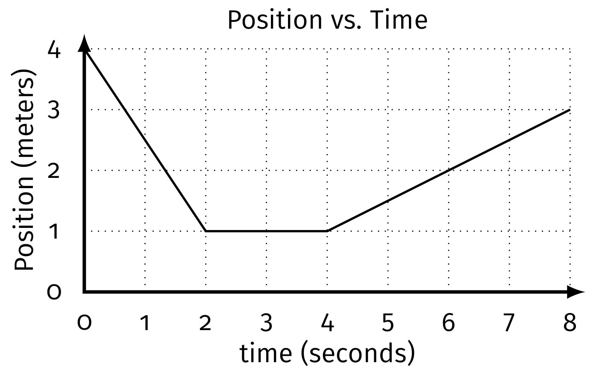

class: center, middle # Regents Physics Daily Plans 2018-2019 --- class:inverse #2019.05.02 Regents Physics **HalaQuestion**: *What was your childhood dream job? Is it still your dream job?* 1. Regents Practice 2. Electrostatics Practice 3. Electric Fields --- class:inverse #2019.05.01 Regents Physics #Do Now Quiz yourself: 1. What is an elementary charge? 2. Can something have a charge of `\(2.2 \times 10^{-19} \text{ C}\)`? 3. How many Coulombs are in an elementary charge? 4. How many elementary charges are in a Coulomb? 5. What is the charge of something that is attracted to a positive charge? 6. I have a conducting sphere of +3 C and a conducting sphere of -5 C. I touch them together and move them apart. What is the charge on each sphere now? 7. Did the +3 C sphere gain or lose electrons after touching the -5 C sphere? --- class:inverse #2019.05.01 Regents Physics **HalaQuestion**: *What is your spirit animal?* 1. 2003 Regents Page 2 2. Coulomb's Law Notes 3. Electrostatic Practice 4. Van de Graff Generator 5. Exit Ticket --- class:inverse #2019.04.30 **HalaQuestion**: *What would you pick as your last meal?* 1. Rundown for the end of the year: - Electricity, Waves, Modern 2. Regents Practice 3. Static Electricity Notes 4. Static Electricty Practice 5. Exit ticket --- #2019.03.04 Regents Physics 1. Finish Flying Pigs (and Cows and Bats) Lab 2. Circular Motion Practice Problems 3. Practice Quiz - Circular Motion HW: Quiz Wednesday on Circular Motion --- #2019.02.28 Regents Physics 1. Circular Motion Notes Review 2. Flying Pigs Lab 3. Regents Practice Questions **Quiz Monday on Circular Motion** --- #2019.02.26 Regents Physics 1. Whiteboard Circular Motion Pivot results 2. Board Meeting 3. Notes on Circular Motion 4. Regents Circular Motion Practice --- #2019.02.25 Regents Physics 1. Pivot - Circular Motion - Work with a partner - How does speed affect the radial force? - How does the radius affect the radial force? - How does mass affect the radial force? 2. Board Meeting on Pivot --- #2019.02.15 Regents Physics 1. Belated Valentines 2. Practice in groups -- ask questions 3. Quiz 4. Freedom! (Well almost, one more block...) --- ##2019.02.14 Regents Physics 💕 .center[<a data-flickr-embed="true" href="https://www.flickr.com/photos/phyz/5432926646/in/album-72157625985944742/" title="Aristotle<3"><img src="https://farm6.staticflickr.com/5099/5432926646_53835050cf.jpg" width="387" height="500" alt="Aristotle<3"></a><script async src="//embedr.flickr.com/assets/client-code.js" charset="utf-8"></script>] --- ##2019.02.14 Regents Physics 💕 .center[<a data-flickr-embed="true" href="https://www.flickr.com/photos/phyz/5420595982/in/album-72157625985944742/" title="Bohr<3"><img src="https://farm6.staticflickr.com/5299/5420595982_862530b377.jpg" width="386" height="500" alt="Bohr<3"></a><script async src="//embedr.flickr.com/assets/client-code.js" charset="utf-8"></script> ] --- ##2019.02.14 Regents Physics 💕 .center[<a data-flickr-embed="true" href="https://www.flickr.com/photos/phyz/5430433092/in/album-72157625985944742/" title="Copernicus<3"><img src="https://farm6.staticflickr.com/5214/5430433092_10b8c5384d.jpg" width="500" height="386" alt="Copernicus<3"></a><script async src="//embedr.flickr.com/assets/client-code.js" charset="utf-8"></script> ] --- ##2019.02.14 Regents Physics 💕 .center[<a data-flickr-embed="true" href="https://www.flickr.com/photos/phyz/5422196989/in/album-72157625985944742/" title="Curie<3"><img src="https://farm6.staticflickr.com/5176/5422196989_5519b5ed19.jpg" width="386" height="500" alt="Curie<3"></a><script async src="//embedr.flickr.com/assets/client-code.js" charset="utf-8"></script> ] --- ##2019.02.14 Regents Physics 💕 .center[<a data-flickr-embed="true" href="https://www.flickr.com/photos/phyz/5438198362/in/album-72157625985944742/" title="Einstein<3"><img src="https://farm5.staticflickr.com/4146/5438198362_f3c5c06604.jpg" width="385" height="500" alt="Einstein<3"></a><script async src="//embedr.flickr.com/assets/client-code.js" charset="utf-8"></script> ] --- ##2019.02.14 Regents Physics 💕 .center[<a data-flickr-embed="true" href="https://www.flickr.com/photos/phyz/5421432638/in/album-72157625985944742/" title="Heisenberg<3"><img src="https://farm6.staticflickr.com/5215/5421432638_b96d09631f.jpg" width="385" height="500" alt="Heisenberg<3"></a><script async src="//embedr.flickr.com/assets/client-code.js" charset="utf-8"></script> ] --- ##2019.02.14 Regents Physics 💕 .center[<a data-flickr-embed="true" href="https://www.flickr.com/photos/phyz/5419991603/in/album-72157625985944742/" title="Kelvin<3"><img src="https://farm6.staticflickr.com/5096/5419991603_d2d04ae40b.jpg" width="390" height="500" alt="Kelvin<3"></a><script async src="//embedr.flickr.com/assets/client-code.js" charset="utf-8"></script> ] --- ##2019.02.14 Regents Physics 💕 .center[<a data-flickr-embed="true" href="https://www.flickr.com/photos/phyz/5437125189/in/album-72157625985944742/" title="Kepler<3"><img src="https://farm5.staticflickr.com/4075/5437125189_ba71444e8a.jpg" width="383" height="500" alt="Kepler<3"></a><script async src="//embedr.flickr.com/assets/client-code.js" charset="utf-8"></script> ] --- ##2019.02.14 Regents Physics 💕 .center[<a data-flickr-embed="true" href="https://www.flickr.com/photos/phyz/5436137772/in/album-72157625985944742/" title="Meitner<3"><img src="https://farm6.staticflickr.com/5179/5436137772_e3bfe0bebe.jpg" width="500" height="384" alt="Meitner<3"></a><script async src="//embedr.flickr.com/assets/client-code.js" charset="utf-8"></script> ] --- ##2019.02.14 Regents Physics 💕 .center[<a data-flickr-embed="true" href="https://www.flickr.com/photos/phyz/5419991927/in/album-72157625985944742/" title="Newton<3"><img src="https://farm6.staticflickr.com/5018/5419991927_1cb426ede8.jpg" width="500" height="390" alt="Newton<3"></a><script async src="//embedr.flickr.com/assets/client-code.js" charset="utf-8"></script> ] --- ##2019.02.14 Regents Physics 💕 .center[<a data-flickr-embed="true" href="https://www.flickr.com/photos/phyz/5421432954/in/album-72157625985944742/" title="Ohm<3"><img src="https://farm6.staticflickr.com/5291/5421432954_df60b9c92b.jpg" width="387" height="500" alt="Ohm<3"></a><script async src="//embedr.flickr.com/assets/client-code.js" charset="utf-8"></script> ] --- ##2019.02.14 Regents Physics 💕 .center[<a data-flickr-embed="true" href="https://www.flickr.com/photos/phyz/5428905150/in/album-72157625985944742/" title="Planck<3"><img src="https://farm6.staticflickr.com/5256/5428905150_11bfe9df87.jpg" width="500" height="386" alt="Planck<3"></a><script async src="//embedr.flickr.com/assets/client-code.js" charset="utf-8"></script> ] --- ##2019.02.14 Regents Physics 💕 .center[<a data-flickr-embed="true" href="https://www.flickr.com/photos/phyz/5419992677/in/album-72157625985944742/" title="Sagan<3"><img src="https://farm6.staticflickr.com/5059/5419992677_5d87847a31.jpg" width="386" height="500" alt="Sagan<3"></a><script async src="//embedr.flickr.com/assets/client-code.js" charset="utf-8"></script> ] --- #2019.02.14 Regents Physics 💕 .center[<a data-flickr-embed="true" href="https://www.flickr.com/photos/phyz/5419993031/in/album-72157625985944742/" title="Tesla<3"><img src="https://farm6.staticflickr.com/5254/5419993031_ba77a5be9c.jpg" width="500" height="387" alt="Tesla<3"></a><script async src="//embedr.flickr.com/assets/client-code.js" charset="utf-8"></script> ] --- ##2019.02.14 Regents Physics 💕 .center[<img src="https://www.symmetrymagazine.org/sites/default/files/styles/2015_inset_one/public/images/standard/Inline_Valentine_1.jpg?itok=7ulAmnvQ" width = "900px"/>] --- ##2019.02.14 Regents Physics 💕 .center[<img src="https://www.symmetrymagazine.org/sites/default/files/styles/2015_inset_one/public/images/standard/Inline_Valentine_2.jpg?itok=86upbsAH" width = "900px"/>] --- ##2019.02.14 Regents Physics 💕 .center[<img src="https://www.symmetrymagazine.org/sites/default/files/styles/2015_inset_one/public/images/standard/Inline_Valentine_3.jpg?itok=0wfu0miw" width = "900px"/>] --- ##2019.02.14 Regents Physics 💕 .center[<img src="https://www.symmetrymagazine.org/sites/default/files/styles/2015_inset_one/public/images/standard/Inline_Valentine_4.jpg?itok=OJq3Mb-r" width = "900px"/>] --- ##2019.02.14 Regents Physics 💕 .center[<img src="https://www.symmetrymagazine.org/sites/default/files/styles/2015_inset_one/public/images/standard/Inline_Valentine_5.jpg?itok=I6ygAqQd" width = "900px"/>] --- ##2019.02.14 Regents Physics 💕 .center[<img src="https://www.symmetrymagazine.org/sites/default/files/styles/2015_inset_one/public/images/standard/Physics_love_poems_2.png?itok=cJBFcLY2" width = "900px"/>] --- ##2019.02.14 Regents Physics 💕 .center[<img src="https://www.symmetrymagazine.org/sites/default/files/styles/2015_inset_one/public/images/standard/Physics_love_poems_3.png?itok=T4wt-ne-" width = "900px"/>] --- ##2019.02.14 Regents Physics 💕 .center[<img src="https://www.symmetrymagazine.org/sites/default/files/styles/2015_inset_one/public/images/standard/Physics_love_poems_4.png?itok=4k3NAfI1" width = "900px"/>] --- #2019.02.12 Regents Physics 1. Finish Group Problems on Whiteboards 2. Work with your partner on Practice questions posted on classroom - put solutions on whiteboards we will compare after each question Tomorrow: - I will not be here - You will work on the Regents Practice Question, I will schedule the answers to post near the end of class. - You will have a quiz on Friday --- #2019.02.11 Regents Physics 1. Do Now: 2. Discuss Projectiles at an angle whiteboard 3. Projectiles at an angle practice - Get a partner and... - create a problem that can be tested with the simulation - Solve your problem and test it with the simulation - Write it on a whiteboard (the problem not the solution) - Trade with another group - Solve that group's problem and test - Repeat 4. Practice Regents questions --- #2019.02.07 Regents Physics 1. Quiz 2. Discuss Projectiles at an angle Simulation Questions + What happens to the range and max height as you increase the launch angle? + What angle gives you the greatest range? + What angle gives you the greatest launch height? + Can you get the same range with two angles? 3. How to: Projectiles at an Angle: - Find intial velocity components - Time still links horizontal and vertical motion - Use Equations: Question: Herman the human cannonball is launched from level ground at an angle of 30° above the horizontal with an initial velocity of 26 m/s. How far does Herman travel horizontally before reuniting with the ground? --- #2019.02.06 Regents Physics 1. Quiz 2. Projectile Motion Simulation: - Assuming equal initial launch speed: + What happens to the range and max height as you increase the launch angle? + What angle gives you the greatest range? + What angle gives you the greatest launch height? + Can you get the same range with two angles? 3. Solving Projectile Motion Problems with Launch Angle: - Difference: now you have an initial speed in the y direction. --- #2019.02.05 Regents Physics 1. Finish Horizontal Projectile Lab 2. Horizontal Projectile Practice: - 5, 6, 7-9, 12, 17, 24-26, 33, 35, 37-40, 45 Next Class: Quiz on Free Fall and Horizontal Projectiles --- #2019.02.01 Regents Physcs - Do Now ###1. Ball 1 is dropped from 1.5 meters above the floor. How long does it take for the ball to reach the ground? ###2. Ball 2 is rolled acrosss the floor at 3 m/s at the same time that Ball 1 is dropped. How far does Ball 2 roll while Ball 1 is in the air? --- #2019.02.01 Regents Physics 1. Do Now ✔️ 2. Check answer from free-fall packet 3. Solving Horizontally Fired Projectile Problems 4. Horizontal Projectile Lab --- #2019.01.31 Regents Physics 1. Solving Freefall Problems - `\(v_f = v_i + gt\)` - `\(v_f^2 = v_i^2 + 2gd\)` - `\(d = v_it + \frac{1}{2}gt^2\)` 2. Practice with Regents Freefall problems 3. Solving Horizontal Projectile Problems - How to... - Regents Practice **HW**: Corrections Due by next Friday 2/8 --- #2019.01.30 Regents Physics 1. Go Over Midterm 2. Test Corrections - For each incorrect answer: - What model should you used to solve this problem? (Constant Velocity (CV), Constant Acceleration (CA), Balanced Forces (BF), Unbalanced Forces(UBF)) - Why did you get the questions wrong? (Calculation, Conceptual, Careless, or Clueless) - Fix your mistake or redo the problem AND **show your work** 3. Freefall --- #2019.01.28 Regents Physics 1. Midterms back next class - so don't ask! - We will do test corrections then, will be a completion grade 2. Introduction to Projectile Motion: - Pivot: Tree Views of Projectile Ball - Collect Data individually, analyze with a partner and Whiteboard 3. Board Meeting: - What models fit the horizontal motion? - What models fit the vertical motion? - Constant Velocity, Constant Acceleration, Balanced Forces, Unbalanced Forces --- #2019.01.15 Regents Physics 1. Friction: - What causes/affects it? - Formula - Static vs. Kinetic - Coefficients of Friction 2. Problem-solving and midterm review: - N2L Problems - Incline Problems - Friction Problems 3. Buffet Quiz Friday instead of individual sign ups? --- #2019.01.10 Regents Physics 1. Elevator Problems - work through in partners, compare answers as a class 2. N2L Problem Solving: - How To: - Practice with --- #2018.01.09 Regents Physics 1. Finish Pivot Lab Part 1 2. Discuss Results 3. Collect Data for Part 2 4. Discuss Results 5. Problem Solving Process for Unbalanced Forces 6. Elevator Problems --- #2019.01.08 Regents Physics 1. Pivot: Exploring the Cause of Acceleration - Describing the Motion of the Glider - Measuring/Calculating Acceleration - What are the forces? - What can we measure and explore? What is the mathematical relationship for the causes of acceleration? - Collecting Data individually and analyzing - Collecting Data Part 2 - The mathematical model --- #2019.01.04 Regents Physics 1. Work day at the Physics Dinner table on force problems Remember: - Force of Gravity Parallel to the ramp: `\(F_{g\parallel}=F_g \sin \theta = mg \sin\theta\)` - Force of Gravity Perpendicular to the ramp: `\(F_{g\perp}=F_g \cos \theta = mg \cos\theta\)` --- #2019.01.03 Regents Physics 1. Finish Collision Pivot 2. Whiteboard results and board meeting 3. Inclined Plane Notes 4. Force Problem Solving with numbers --- class:photoback #2019.01.02 Regents Physics 1. Review Physics Problem 2. Collisions - Pivot Video Lab Essential Question: *How does the force of A on B compare to the force of B on A?* --- class:photoback #2018.12.20 Regents Physics 1. Go over Spring Force Lab 2. Regents Spring Force Questions 3. Inclined Planes 4. Force Problems --- #2018.12.13 Regents Physics 1. Quiz 2. Free Body Diagram Practice in packet - start when you finish your quiz, we will compare to your partner's and then go over them all 3. Labs? --- class:photoback #2018.12.12 Regents Physics 1. Practice Quiz 2. Finish the box problem 3. Review **Alysa's 1st Law** - *Does the box problem fit into the first law?* 4. Practice with Free-body diagram and interaction diagrams -- Speed Boarding --- class:christmas #2017.12.10 Regents Physics 1. Free Body Diagram Practice - Speed Dating 2. Spring Force Lab --- class:christmas #2018.12.07 1. Dueling Fan Carts: - Introduction to Interaction Diagrams - Introduction to Free Body Diagrams (Force Diagrams) 2. Draw Free Body Diagrams for object in interaction stations 3. Begin ***The Box Problem*** --- class:christmas #2018.12.06 Regents Physics 1. Do Now: - *List as many forces as you can think of and provide a situation that shows that force occurring*. (Do on a piece of scrap paper) 1. Review Bowling Ball Physics 2. Contact interactions result in: - **Compression** - **Stretch** - **Shear** 3. Interaction Stations - identify the result of the interactions between objects - is there compression, stretch, and/or shear occuring? 4. What is a force? 5. Define Types of Forces 6. Finish rolling ball problem --- #2018.12.04 Regents Physics 1. Bowling Ball Physics: - Essential Questions: ***How do you change the motion of the bowling ball? How do you keep the motion of the bowling ball constant?*** 2. Board Meeting Results: - What patterns do you notice? - How do the mallet taps affect the motion of the bowling ball? - How do the interactions between the bowling ball and the mallet result in constant velocity or constant acceleration models for the bowling ball's motion? We will finish the rolling ball problem next class. --- #2018.12.03 Regents Physics 1. Quiz 2. Finish Practical - Hand in paper 3. Ranking Task 4. Texting and Driving --- #2018.11.27 Regents Physics .left-column-short[ <style type="text/css"> .tg {border-collapse:collapse;border-spacing:0;} .tg td{font-family:Ubuntu Mono, sans-serif;font-size:24px;padding:10px 5px;border-style:solid;border-width:1px;overflow:hidden;word-break:normal;border-color:black;} .tg th{font-family:Ubuntu Mono, sans-serif;font-size:24px;font-weight:normal;padding:10px 5px;border-style:solid;border-width:1px;overflow:hidden;word-break:normal;border-color:black;} .tg .tg-s268{text-align:left} .tg .tg-0lax{text-align:left;vertical-align:top} </style> <table class="tg"> <tr> <th class="tg-s268">Block</th> <th class="tg-s268">Start Time</th> <th class="tg-s268">End Time</th> </tr> <tr> <td class="tg-s268">1</td> <td class="tg-s268">9:40</td> <td class="tg-s268">10:36</td> </tr> <tr> <td class="tg-s268">2</td> <td class="tg-s268">10:39</td> <td class="tg-s268">11:35</td> </tr> <tr> <td class="tg-s268">A Lunch</td> <td class="tg-s268">11:38</td> <td class="tg-s268">11:58</td> </tr> <tr> <td class="tg-0lax">3</td> <td class="tg-0lax">12:01</td> <td class="tg-0lax">12:57</td> </tr> <tr> <td class="tg-0lax">4</td> <td class="tg-0lax">1:00</td> <td class="tg-0lax">1:55</td> </tr> </table> ] .right-column-long[ 1. Quiz - stacks of graphs - I am only grading the front (the stacks of graphs) the back is ***practice*** - When you are finished, we will go over the back together. 2. Work on problem solving questions 3. Go over problem solving questions 4. Regents Questions Practice ] --- #2018.11.26 Regents Physics 1. Do Now - Practice Stacks of Graphs (on scrap paper look at whiteboard) 2. Review - VT Graphs: area and slope 3. The Kinematic Equations: $$\bar{v}=\frac{d}{t}$$ $$a = \frac{\Delta v}{t}$$ $$v_f = v_i + at$$ $$d = v_it+\frac{1}{2}at^2$$ $$v_f^2 = v_i^2 + 2ad$$ --- #2018.11.19 Regents Physics 1. Practice Quiz - Stacks of Graphs 2. V-T Graphs with changing velocity 3. Practice with VT graphs Quiz: 11/27 (Tuesday) on stacks of graphs and VT graphs with area and slope calculations. We will do some practice in class on Monday. --- #2018.11.13 Regents Physics 1. Stacks of graphs in packet 2. Gallery walk of solutions 2. Ball and ramp simulation 3. VT graphs **Up Next:** - Practice Quiz on stacks of graphs (CAPM 1) Thursday - Quiz on stacks of graphs (CAPM 1) Friday --- #2018.11.07 Regents Physics 1. Finish going over carts and ramps 2. The 4 shapes of positon vs. time 3. Card sort version 2 4. Applying motion graphs to ball and ramp 5. Stacks of graph practice --- #2018.11.06 Regents Physics 1. Finish Ramp and Card Sort 2. Fill out table on back together, and discuss each situation 3. Second Card Sort activity - Sort cards, in any logical manner - Leave discription - Rotate around round and review other groups sorting methods --- #2018.11.05 Regents Physics .left-column[ <img src="sleepyzeke.jpg" width="80%"/> ] .right-column[ ###Sleepy Monday p/b Zeke 1. Quiz 2. Lab Extension - Short your cards based on the motion description and the diagrammed set up in your packet - Test your predictions with the motion sensor - Record your prediction and the actual motion graphs in your packet 3. Group summary of lab findings ] --- #2018.11.02 Regents Physics 1. Practice Quiz 1. How to create an instantaneous velocity vs. time graph 2. Make your V-T Graphs 3. Finish Board Meeting 4. Card Sort and Ramp Lab Extension - Short your cards based on the motion description - and the set up in your handout - Test your predictions with the motion sensor **HW:** Quiz on vector constant velocity next class. --- class: halloween #2018.10.31 Regents Physics ##Happy Halloween 👻🎃👽🍬🍭🍫 1. Hand Back Quiz 2. Finish Ramp Lab Data Collection: - Linearize if necessary...hint hint... --- class:halloween #2018.10.30 Regents Physics 🎃 1. Quiz 2. Hand Back Quiz 3. Ramp Lab --- #2018.10.19 Regents Physics ##Do Now: **Alysa hits a softball with a speed of 35 m/s with an optimal launch angle of 40 degrees above the horizontal. Find the horizontal and vertical components of the batted softball.** ##Today: 1. Work day -- practicing with vectors and constant velocity motion questions from old regents exams. 2. Next class: vector quiz, add displacements graphically. Find resultants mathematically with components. --- #Equations .right-column[ For perpendicular components when considering magnitude: $$A_x^2 + A_y^2 = A^2$$ $$A_x = A\cos\theta$$ $$A_y = A\sin\theta$$ $$\bar{v} = \frac{d}{t}$$ $$average \space speed = \frac{distance}{time}$$ ] .left-column[ <img src="https://cnx.org/resources/f8d41bad11700e81a082e2599e209bc1627e913d" width = "300"/> ] --- class:inverse #2018.10.25 Regents Physics ##Do Now: **A person was displaced 15 meters at an angle of 35 degrees North of East (measure 35 degrees up from East). Determine how far East, and separately, how far North the person was displaced.** 1. Finish and discuss Pivot of measuring velcity - On a whiteboard put you and your partner's problem solving process 2. Vector Math - with Trig... 3. Practice makes that myelin 🤔 --- #2018.10.24 Regents Physics ##Do Now: **A person walks 150. meters due east and then walks 30. meters due west. The entire trip takes the person 10. minutes. Determine the magnitude and the direction of the person’s total displacement.** 1. Pivot - Finding 2-Dimensional Velocity - Everyone solves their own trial - Put you and your partners process on a whiteboard 1. Graphical Vector Practice 2. Vector Math - Solving with Analytical Methods 3. Practice with Analytical Methods --- #2018.10.23 Regents Physics 1. Review Vector Problem 2. How to Vector Math - Graphically 3. How to Vector Math - Analytically 4. Vector Practice --- #2018.10.18 Regents Physics 1. Quiz 2. Finish Applying the Model 3. 2-D Horizontal Motion --- #2018.10.17 Regents Physics 1. Dueling Buggies - Partners: Random Selection 2. While waiting for your turn -- complete applying the model - trade page 39 with me for a new one <style type="text/css"> .tg {border-collapse:collapse;border-spacing:0;} .tg td{font-family:Arial, sans-serif;font-size:20px;padding:10px 5px;border-style:solid;border-width:1px;overflow:hidden;word-break:normal;border-color:black;} .tg th{font-family:Arial, sans-serif;font-size:20px;font-weight:normal;padding:10px 5px;border-style:solid;border-width:1px;overflow:hidden;word-break:normal;border-color:black;} .tg .tg-s268{text-align:left} </style> <table class="tg"> <tr> <th class="tg-s268"></th> <th class="tg-s268">Try 1</th> <th class="tg-s268">Try 2</th> <th class="tg-s268">Try 3</th> </tr> <tr> <td class="tg-s268">±7 cm</td> <td class="tg-s268">100</td> <td class="tg-s268">95</td> <td class="tg-s268">90</td> </tr> <tr> <td class="tg-s268">±7 to 14 cm</td> <td class="tg-s268">90</td> <td class="tg-s268">85</td> <td class="tg-s268">80</td> </tr> <tr> <td class="tg-s268">±14 to 21 cm</td> <td class="tg-s268">80</td> <td class="tg-s268">75</td> <td class="tg-s268">70</td> </tr> <tr> <td class="tg-s268">> ±21 cm</td> <td class="tg-s268">Try Again</td> <td class="tg-s268">Try Again</td> <td class="tg-s268">Write Error Analysis</td> </tr> </table> HW: Quiz tomorrow on CVPM 1, 2, and 3 --- #2018.10.15 Regents Physics 1. Whiteboard group problems 2. Applying the model 3. Model Summary Boards: - Your summary must contain everything necessary to solve any problem to which this model applies. - Your summary must fit on one whiteboard, be uncluttered, and use large writing so that it can be seen across the room. - Your summary must use multiple representations: diagrams, graphs, equations, words, proportionalities. - Your summary must pay particular attention to how to derive equations from the graphs. --- #2018.10.12 Regents Physics 1. Learning Opportunity (Quiz) 2. Velocity vs. Time Graphs and "area under the curve" 3. Practice with everything - whiteboard in pairs 4. Applying the Model --- #2018.10.11 Regents Physics 1. Do Now: Self Quiz on Position vs. Time Graphs 2. Go over quiz scores and grading system 2. Finish Bowling Ball Collisions Pivot 3. Velocity vs. Time Graphs and "area under the curve" 4. Applying the Model --- #2018.10.09 Regents Physics 1. Quiz yourself on quantitative position vs. time graphs 2. Velocity vs. Time Graphs and "area under the curve" 3. Applying the model (replace page 39 and 40 with new page) 4. Pivot: Where will the bowling balls collide? --- #2018.10.04 Regents Physics 1. Finish walk the graph 2. How do we define "how far"? 2. Interpreting position vs. time graphs quantitatively 3. Calculating Average Velocity HW: Quiz tomorrow on multiple representations - very similar to walk the graph and the position vs. time and motion maps that we've worked on. - you will be given a position vs. time graph, a velocity vs. time graph, motion map, or narrative description and you need to provide the other three - I have option practice for you and will post answer keys tonight --- #2018.10.02 Regents Physics 1. Do Now: Test yourself - make a motion map from the graph below (try to do this from memory without help, only ask a friend for help when you are ***truly*** stuck) 2. Introduction to the motion sensor 3. Motion Sensor "Lab" (more of an experience - nothing to hand in) 4. Intrepreting Position vs. Time graphs quantitatively (with numbers) .center[  ] --- #2018.10.01 Regents Physics 1. Finish Multiple Representations 2. Whiteboard Multiple representations 3. Motion Sensor introduction 4. Walk the Graph Lab --- #2018.09.28 Regents Physics 1. Quiz 2. Does it move with constant velocity? 3. Introduction to motion maps 4. Multiple representation practice Next Class: Motion Sensor Lab --- #2018.09.26 Regents Physics 1. Finish Buggy Lab Board Meeting 2. Porter Lab Review 3. Write Conclusions and Discussions 4. Claim-Evidence-Reasoning 5. Does it move with a constant velocity? --- #2018.09.25 Regents Physics 1. DO NOW: On a half sheet of write down a definition of a **model** and provide examples of models. 2. Is it a model? 3. Finish Buggy Analysis 4. Buggy Board Meeting 5. Is it CV? HW: Quiz Friday on writing the equation for experimental results. --- #Examples of "Models" #$$\vec{F}_g = \frac{G m_1 m_2}{r^2}$$ --- #Examples of "Models" .center[<img src="G:\My Drive\GitHub\mrporterphysics.github.io\Presentations\AP Rotation Representation\figures\anggraphs.png" width = "1100"/> ] --- #Examples of "Models" .center[<img src="http://www.acs.psu.edu/drussell/Demos/waves/Lwave-v8.gif" width="1100"/>] --- #Examples of "Models" .center[<iframe width="700" height="500" src="https://www.youtube.com/embed/O48qA2f8qJs" frameborder="0" allow="autoplay; encrypted-media" allowfullscreen></iframe> ] --- ##On your own: - Now that you have seen my examples of **Models** write down a few more of your own on your sheet of paper. -- - Get into a group of 3 and compare your examples. -- - Write down a list of your group's best examples of **models** on a whiteboard -- - Consider how you are defining the word *model* as you make your list --- class:center, middle ##Share model examples, compare and contrast differences. Make a list as a class of models. --- class:center, middle ##Write down a definition of model with your group on your whiteboard. --- #Are these examples of models based on your definition? - a paper airplane - observing a bird at a bird feeder - making an analogy ("the heart is like a pump") - forming a mental image of molecules in a liquid state - going on a field trip to the Grand Canyon --- #Discuss - a paper airplane - observing a bird at a bird feeder - making an analogy ("the heart is like a pump") - forming a mental image of molecules in a liquid state - going on a field trip to the Grand Canyon --- # 2018.09.24 Regents Physics 1. Buggy Lab 2. Buggy Lab Analysis 3. Buggy Lab Board Meeting **Note: Answers to proportional reasoning will be posted on classroom -- check them and come back with any questions you may have. --- ##The Buggy Lab -- ###Step 1: Observations -- ###Step 2: What observations can we measure? -- ###Step 3: Can we predict the motion of the buggy? (control variables) -- ###Step 4: What questions can we ask and answer through experiment? -- ### Step 5: Anything else? --- ##The Buggy Lab ###Goal: Create a descriptive model for motion using your toy buggy. ###Essential Questions: 1. Does your buggy move in a consistent manner? - How does the _position_ of your buggy relate to the _clock reading_ 2. Does your starting position matter? 3. How does your buggy differ (in terms of motion) from the other groups buggies? --- # 2018.09.20 Regents Physics 1. Review Linearization Practice - compare answers between each other 2. Proportional Reasoning Questions in pairs 3. Buggy lab --- class: center, middle <img src="curve_fitting1.jpg" width="700px" /> --- class: center, middle <img src="curve_fitting2.jpg" width="700px" /> --- ##2018.09.18 Regents Physics - Do Now I. In the equation `\(y=\frac{ab^2}{c}\)` what happens to `\(y\)` if `\(a\)` is doubled? II. In the equation `\(y=\frac{ab^2}{c}\)` what happens to `\(y\)` if `\(c\)` is tripled? III. In the equation `\(y=\frac{ab^2}{c}\)` what happens to `\(y\)` if `\(c\)` is quadrupled? --- ##2018.09.18 Regents Physics 1. Linearization practice - work in pairs, spread out and we will return to review our answers. 2. Proportional, Direct, Indirect, and Inverse Relationships. 3. Time Dependent: Intro to the Buggy Lab --- **Direct Relationship**: Increasing one variable will increase the other. **Indirect Relationship**: Increasing one variable will decrease the other. **Proportional Relationship**: Doubling one variable will double the other. (No intecepts!) --- ####Learning Goals: - *I can design an experiment to investigate new phenomena, test hypotheses and solve experimental problems* - *I can collect and analyze experimental data* - *I can linearize experimental data* - *I can communicate with my peers about science* 2. Why do we not want to "play find the right curve"? 3. How to linearize to find the relationship 4. 6 (main) types of mathematical relationships in physics 5. Linearize your data from stations labs in Pivot. - Add new columns, use the calculate functions - Write a second results statement for each lab (the slope of this assignment will be 2 results statements **for each** one additional lab...haha funny Porter 🤣) 6. Whiteboard lab results - one group per lab 6. Proportional Reasoning -- ##2018.09.13 Regents Physics ####Learning Goals: - *I can design an experiment to investigate new phenomena, test hypotheses and solve experimental problems* - *I can collect and analyze experimental data* - *I can communicate with my peers about science* 1. Finish collecting lab data 2. Write a general description of the results for each experiment. 3. Introduction to Linearization 4. Linearize data from experiment 5. Whiteboard **one** of the labs (assigned by Mr. Porter) 6. Present results of your lab to the class 7. Exit Ticket: In your own words, describe why we linearize data for analysis instead of using curve fitting. --- ##2018.09.12 Do Now On a scrap piece of paper, write the equation for this experiment, and determine the physical meaning of the slope and intercept. .center[<img src="volumetime2.png" width="850"/>] --- ##2018.09.12 Regents Physics ####Learning Goals: - *I can design an experiment to investigate new phenomena, test hypotheses and solve experimental problems* - *I can collect and analyze experimental data* - *I can communicate with my peers about science* 1. **Do Now: ** 1. Ball Bounce Board Meeting 2. Introduction to station labs: + What do we do with non-linear relationships!? + Concentrate on experimental design and data collection **Homework: * - Get your safety contract signed by ***Friday*** --- ##2018.09.07 Regents Physics ####Learning Goals: - *I can design an experiment to investigate new phenomena, test hypotheses and solve experimental problems* - *I can collect and analyze experimental data* - *I can communicate with my peers about science* 1. Do now: write down two things you could have done to improve your experimental design for the pasta lab on the half sheet of paper (by the door). 1. Finish Board Meeting discussion - What makes a good whiteboard? - How can we improve our experimental design? 1. Linear Modeling and Experimental Design Notes 2. Ball Bounce Lab --- ##Ball Bounce Lab ###Essential Question: *Can we predict where to drop our assigned ball from so that it bounces to a specified height?* ###Your Task: Develop an experiment where the results will allow you to create a mathematical model that relates the drop height of a ball to its bounce height. --- ##2018.09.07 Regents Physics ####Learning Goals: - *I can design an experiment to investigate new phenomena, test hypotheses and solve experimental problems* - *I can collect and analyze experimental data* - *I can communicate with my peers about science* ####Class Outline: 1. Finish Collecting Pasta Bridge Data 2. Answer questions in Pivots 3. Prepare Whiteboard for a "Board Meeting" - On your board you should place a summary of your lab and lab results. 4. Board Meeting 5. Linear Modeling Notes: 6. Ball Bounce Lab (using linear models to make predictions) --- class:inverse #WELCOME!! ##2018.09.06 Regents Physics 1. Grab a handout, find a sit at the big table, and answer the 3 questions on the handout. 2. Fill out the back of your index card with your name and a phone number or numbers where you can be reached if you happen to over sleep for the midterm or final. 3. Lab Grouping activity 4. Survival Plans 🏝️ 5. Technology Administrata: - Sign up for Google Classroom - Sign up for Pivot Interactives (online lab notebook) 6. Pasta Bridge Lab 🍝 7. Exit ticket 🎟️: Class reflection on classroom .footer[<img src="http://www.schodack.k12.ny.us/wp-content/uploads/2018/08/SchodackCSD-header-notag.jpg" width=100/>] --- ##2018.09.06 Regents Physics ###End of Class To Do: - Save Pivot - Clean up area, mark the cup you are using (so you use the same cup next time) - is there anything else you need to measure to start taking data again tomorrow? (i.e. chair distance, chair orientation, etc) - Erase whiteboard and return whiteboard markers - Answer question on Google Classroom .footer[<img src="http://www.schodack.k12.ny.us/wp-content/uploads/2018/08/SchodackCSD-header-notag.jpg" width=100/>]